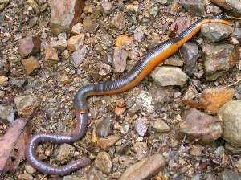
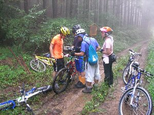

森町サイクリング | ２００５年１０月 |
|---|---|
| 毎年恒例になっている、小川山（廻り目平）キャンプが、天気が良くないため中止とし、なんとなく天気が良くはなりそうな日曜に、有志が集まり、近場で自転車に乗ることになった。 しかし、朝起きたら雨。シトシトではなく、サーと降る雨。 こりゃ〜中止か！ とは思ったが、一応キッカーにメール。 キッカー「行くぞ！ 西の方は雨止むから」 ベッシー「え！ マジで！？」 他のメンバーも同じ様に中止と思い、穏やかな日曜の朝を迎えていたと思うが、急報を聞き、急いで支度を済ませ、静岡西部の森町に向かった。 途中のバイパスが事故で通行止め！ 迂回路激混みの中、森町に着いたのは昼になっていた。 昼食を軽く済ませ、雨が小降りになって来たところを見計らって出発！ 走り出したら、雨が止んできた。 ちなみに今回の面子は、最近自転車を購入してハマりまくっているキッカー、昨日同じコースを走ったばかりのシュガー、買ったばかりのMTBで林道デビューのハチさん、強制的に呼び出された感じのまーしー、そして暇な私（べっしー）の計５人。 今回のコースは、アクティ森を起点に、時間も午後スタートなので中級コースを行こうと言う事になりました。未舗装路も有るし楽しめそう♪ | |
 林道を休憩中 |  上級コースの坂を押しながら |
| 初めは車道をスイスイとコスモスを眺めながら走り、じきに軽く登りの未舗装路へ突入！ 雨が上がったとは言え、薄暗い林の中をひたすら登る。途中で自転車を交換して、乗り廻しながら休憩を挟みつつ、中級と上級のコース分かれ目まで到達。 だいぶ標高の高いところに居る感じで、雲の切れ目から遠い山並みが見える。（まあ、スタートが既に標高高いのだろうが）あー、天気が良ければ、景色良いだろうな〜 出発が遅かった分、時間的に余裕が無い。このまま上級へ行くか、予定通り中級へ行くか。 キッカーが居るのだから、即上級コース決定！ キッカー「ダメなら引き返せば良いじゃん！ 行ける所まで行こう！」って、いつもの調子で驀進！ しかし、ココから坂は激しく急になり、雨で抉り取られた地面が行く手を阻む。途中降りて押しながらも進む。 先頭を行くキッカーが「あっ、巨大ミミズ発見！」 続くまーしーが「これ、巨大ヒルがミミズ食ってる！」 ・・・・都会ではお目にかかれない光景に出くわす。 | |
|  左下がミミズ、右上がヒル？！ |  ココが山頂？？ |
| 緩やかな道になったところで、また自転車に乗り、気持ち良く林の中の未舗装路を走る。コースの折り返し地点とも言うべき山頂の看板が、コース脇にポツンと立ち、危うく通り過ぎるところだった。 と言うか、ココ頂上？ そこからは下り坂！（当然だが） ちょっとコケが生えている、コンクリートの箇所が有り、滑りそうで怖い。それでも次第にスピードに慣れ、アドレナリンが分泌され始めたのか、面白くなってくる。 右手に人家が、左手に山並みが見えてきて、人里に戻って来た感じになり、そろそろコースも終盤に差し掛かる。チョロット下れば、もう一般車道だ。 午後５時過ぎにゴール。あれから雨にも降られず、コケル人もいなくて無事にたどり着けました。総合評価で言うと、面白いコースでした。 自分の頑張れる範囲で、無理せず面白く走れたしね。 天気が良ければ、景色も良かったかも、ってのが残念では有りましたが。 「しふとべる」内でもＭＴＢを買う人が増えてきて、これから、このようなサイクリングも多くなりそうだね。 | |
| コメント＆写真 ｂｙべっしー | |